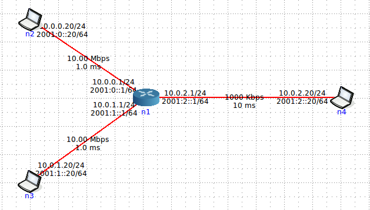

Comme vous le constatez, les liens de n2 et n3 vers n1 sont de 10Mbps et 1ms, tandis que le lien de n1 à n4 est de 1Mbps et 10ms.
Afin de pouvoir observer le phénomène, nous allons limiter la taille du buffer de l'interface de sortie (comme cela serait le cas sur un vrai routeur) grâce à l'API Traffic Control de Linux. En vous connectant sur le routeur (n1 sur la figure) identifiez l'interface de sortie vers n4 et limitez sa taille à 10 paquets grâce à la commande suivante (vérifier que dans votre cas celle-ci est bien eth2 sinon changé avec la bonne interface) :
tc qdisc add dev eth2 root pfifo limit 10
Linux offre un très riche ensemble d'outils permettant la gestion de transmission et la manipulation de paquets. Habituellement, les utilisateurs Linux avertis sont familier avec les outils réseaux disponibles sous Linux pour le firewalling. Cependant, il existe pour Linux un puissant système de contrôle du trafic qui a grandi et mûri sous les noyaux 2.2 et 2.4. Pour plus d'information sur le Linux Traffic Control voir Linux TC Howto. Concernant pfifo que vous utilisez dans de TP voir Classless Queuing Disciplines de ce même document.
-i 1 pour obtenir un affichage toutes les secondes (attention au numéro de ports !). Puis, démarrez tout d'abord un flot UDP sur une longue durée (e.g. avec l'option -t 1000). Au bout de 10 secondes, démarrer le second flot UDP. Qu'observez du côté des statistiques iperf à la réception ?